ЯВЛЕНИЯ НА ПРЕНАСЯНЕ
-
Магнитното поле е една от формите на проява на електромагнитното поле. То се създава от движещи се електрични заряди и действа върху магнитни материали, проводници с ток и върху заредени частици, които се намират в движение. Магнитното поле не притежава източници като магнитни заряди. То е поле от вихров тип и неговите силови линии са затворени.
-
1. Магнитна индукция
Върху рамка с ток в магнитно поле действа въртящ момент М, който е пропорционален на големината на тока I, на площта на рамката S и зависи от ъгъла между посоката на магнитното поле и нормалата n към повърхността на рамката (фиг. 1 а). Въртящият момент е максимален, ако рамката е успоредна на силовите линии (sina = 1) и нула, ако повърхността на рамката е перпендикулярна на силовите линии на полето (sina = 0). Ако токовата рамка е с малки размери и не влияе върху магнитното поле, по нейното поведение се съди за свойствата на малки области от него. Въртящият момент на рамката е
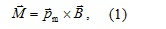
където B е векторът на магнитната индукция на полето, а векторът Pm=ISn се нарича магнитен момент на рамката. Векторът на магнитната индукция е основна характеристика на магнитното поле.
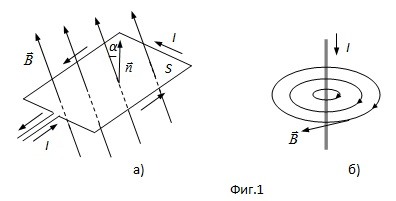
В SI измерителната eдиница за магнитна индукция е тесла (Т). Един тесла е индукцията на магнитно поле, в което върху контур с площ 1 m2 при големина на електричния ток 1 А действа максимален въртящ момент 1 N.m (1T = 1 N/1 A.m).
Посоката на силовите линии на магнитното поле съвпада с посоката на вектора на магнитната индукция, който е допирателен към тях (фиг. 1 б).
Магнитното поле се нарича еднородно, ако във всяка негова точка векторите на магнитната индукция са равни, както по големина, така и по посока. В противен случай магнитното поле е нееднородно.
Принцип на суперпозицията. Ако магнитно поле се създава от няколко проводника или от движещи се електрични заряди, магнитната индукция на резултантното поле е векторна сума от индукциите на полетата, създавани от отделните проводници или заряди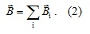
Принцип за независимост на магнитните полета. Всеки проводник, по който тече ток или движещ се електричен заряд, създават в дадена точка на пространството магнитно поле независимо от наличието на други токове и заряди.
-
2. Поток на вектора на магнитната индукция. Теорема на Гаус
Броят на линиите на магнитната индукция, пронизващи дадена повърхност, се нарича поток на вектора на магнитната индукция ФВ. Елементарен поток на магнитната индукция dФВ през участък dS от дадена повърхност S (фиг. 1.2) е скаларната величина
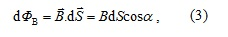
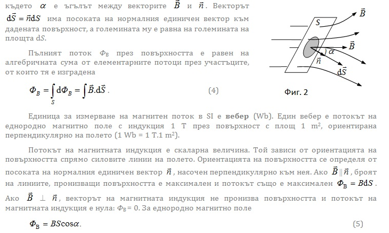

-
3. Закон на Био-Савар-Лаплас
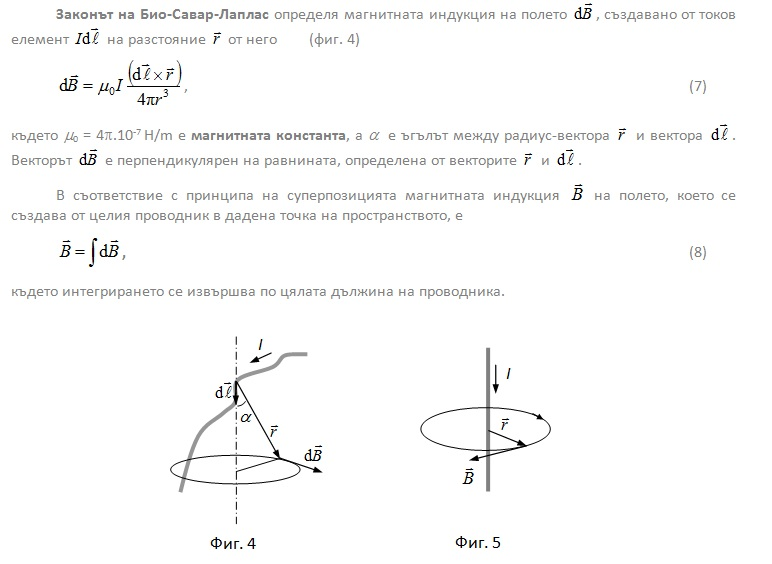
интегрирането се извършва по цялата дължина на проводника.
Магнитната индукция на полето на безкраен праволинеен проводник с ток I (фиг. 5) на разстояние r от него е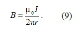
В този случай магнитните силови линии са окръжности с център върху проводника. Посоката им се определя по следното правило: Ако с дясната ръка се обхване проводника, така че палецът да сочи посоката на електричния ток, свитите пръсти на ръката показват посоката на магнитните силови линии (фиг. 5).
-
4. Циркулация на вектора на магнитната индукция
Циркулацията на вектора на магнитната индукция по произволен контур L във вакуум е равна на произведението на магнитната константа и алгебричната сума от токовете, обхванати от контура
-
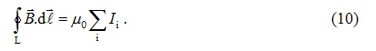
Токът Ii е положителен, ако гледайки срещу него посоката на обхождане по контура, е обратна на движението на часовата стрелка (фиг. 6). В противен случай той е отрицателен. Ако контурът не обхваща токове циркулацията на вектора на магнитната индукция е нула.
Теоремата за циркулацията на вектора на магнитната индукция е известна и като теорема за пълния ток. Тя е изключително полезна за изчисляване на магнитните полета, които се създават от проводници с различна форма. -
-
5. Магнитно поле на масивен проводник
Нека сечението на проводник е с радиус R, а големината на електричния ток през него I и плътността му са постоянни. Избират се два затворени контура L1 и L2 с форма на окръжност с радиуси съответно r1 < R и r2 > R и центрове, разположени върху оста на проводника (фиг. 7 a). От теоремата за циркулацията следва
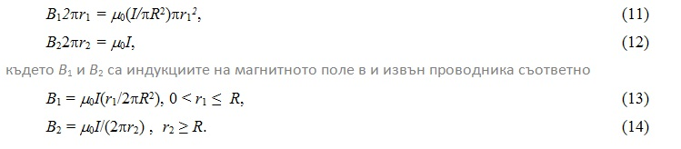
На фиг. 7 б, е представено изменението на магнитното поле. От съображения за симетрия е ясно, че силовите линии на магнитното поле са концентрични окръжности с център върху проводника.
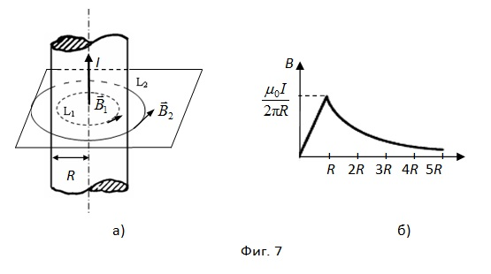
-
6. Магнитно поле на соленоид
Соленоидът е съвкупност от еднакви последователно съединени N на брой кръгови навивки, равномерно разпределени по дължината му ℓ с плътност n = N/ℓ и диаметър d (фиг. 8), по които протича електричен ток с големина I. Ако дължината на соленоида е много по-голяма от диаметъра на навивките, плътността на магнитните силови линии извън соленоида е много ниска и се приема, че магнитното поле е изцяло съсредоточено във вътрешността му. Експерименталното изучаване на магнитното поле, проведено с помощта на железни стърготини показва, че вътре в соленоида полето е еднородно, а извън него е нееднородно и много слабо, т.е. може практически да се приеме равно на нула.
-
Циркулацията на вектора на магнитната индукция по затворен контур, съвпадащ с линиите на магнитната индукция, например ABCDA, която обхваща всичките N навивки, може да се представи, като сума от два интеграла – по външната част ABCD, който е равен на нула и по вътрешната част DA, както следва
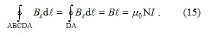
От последното уравнение следва изразът за магнитната индукция на полето на соленоида във вакуум
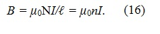
-
7. Магнитно поле на тороид
Тороидът представлява соленоид, огънат във формата на окръжност (фиг. 9). Магнитното поле с индукция е съсредоточено в обема му. Векторът е допирателен към магнитните силови линии, които са концентрични окръжности. От теоремата за циркулацията за контура, съвпадащ с една от силовите линии в тороида, следва
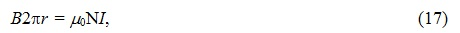
където N е общият брой на еднопосочните токове, обхванати от контура. Магнитната индукция на полето във вътрешността на тороида е
-
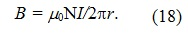
Ако диаметърът на навивките d << R1, R2, където R1 и R2 са съответно външния и вътрешния радиуси на тороида, магнитната индукция на полето в него има една и съща стойност.
Извън тороида магнитното поле е нула, защото:
а) ако r > R, сумата от “положителните” и “отрицателните” токове пронизващи контура е нула;
б) ако r < R, контурът не обхваща електрични токове. -
Видео
-
© ROGACHEV